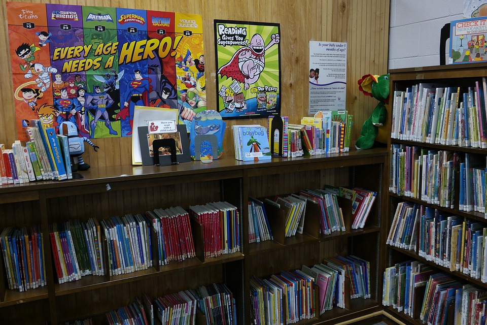
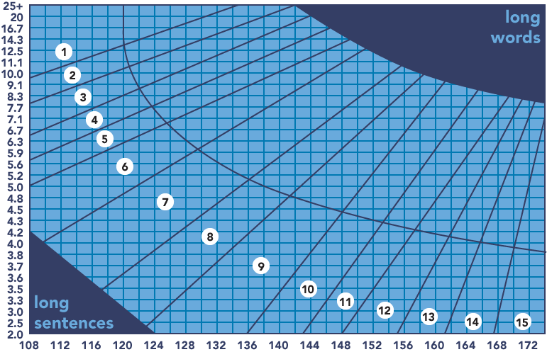

class: center, middle # Reading Levels for Children Books ##(and many other applications) .author[ CORE-UA 109.01, Joanna Klukowska <br> inspired by presentation given by Adina C. in Core 109 (fall 2016) ] .center[ ] --- __is this book appropriate for a 6 year old or is it more suitable for an 11 year old?__ .center[  ] --- # readability score * __readability score__ is a number associated with a book that attempts to indicate the readability level of a book * what is (or should be) included in calculating readability of a book? -- * book length * sentence length * word length * number of syllables per word * word difficulty (simple words vs. hard/fancy words) * grammar * plot structure -- * why do we care about readability score of books/articles/...? -- * children use books to learn: * books that are too hard may discourage students from reading more * books that are too easy do not challenge the students and may be boring * ... what other groups may benefit from readable materials? --- class: center, middle .section[ # readability scores ] --- # Fry Readability Formula * developed by Edward Fry * for English texts (why do you think this matters?) * how is it calculated: * determine the average number of sentences per hundred words (vertical axis) * determine the average number of syllables per hundred words (horizontal axis) * find the point of intersection of those two values in the Fry Graph (next slide) Source: https://en.wikipedia.org/wiki/Fry_readability_formula Online test: http://www.readabilityformulas.com/free-fry-graph-test.php --- # Fry Readability Formula .center[  ] A rendition of the Fry graph. Source: https://en.wikipedia.org/wiki/Fry_readability_formula --- # Flesch-Kincaid Index * developed by Rudolf Flesch and J. Peter Kincaid * developed for the United States Navy * first used in 1978 for assessing difficulty of technical manuals * Pennsylvania was the first US state to require that automobile insurance policies are written with no higher level than the ninth grade on the Flesch-Kincaid index * this is now a standard across the country * the formula used for calculation: $$0.39 \\left ( \\frac{\\mbox{total words}}{\\mbox{total sentences}} \\right ) + 11.8 \\left ( \\frac{\\mbox{total syllables}}{\\mbox{total words}} \\right ) - 15.59$$ * the result is a number that corresponds with a U.S. grade level * .small[Note: The lowest grade level score in theory is −3.40, but there are few real passages in which every sentence consists of a single one-syllable word. Green Eggs and Ham by Dr. Seuss comes close, averaging 5.7 words per sentence and 1.02 syllables per word, with a grade level of −1.3. (Most of the 50 used words are monosyllabic; "anywhere", which occurs eight times, is the only exception.) ] Source: https://en.wikipedia.org/wiki/Flesch%E2%80%93Kincaid_readability_tests --- # Dale-Chall Readability Test * developed by Edgar Dale and Jeanne Chall * attempts to determine comprehension difficulty of the text * originally (1948) used 763 words that were considered simple (80% of fourth-grade students were familiar with those words), <br> in 1995 extended to 3,000 words * list of 3,000 familiar words: * https://wordcounttools.com/list-of-3000-familiar-words.html * http://www.readabilityformulas.com/articles/dale-chall-readability-word-list.php --- # Dale-Chall Readability Test the formula used for calculation: $$ 0.1579 \left (\frac{\mbox{difficult words}}{\mbox{words}}\times 100 \right) + 0.0496 \left (\frac{\mbox{words}}{\mbox{sentences}} \right) $$ * adjustment: if the percentage of difficult words is above 5%, then add 3.6365 to the raw score to get the adjusted score, otherwise the adjusted score is equal to the raw score * score interpretation Score |Notes --------|------- 4.9 or lower| easily understood by an average 4th-grade student or lower 5.0–5.9| easily understood by an average 5th or 6th-grade student 6.0–6.9| easily understood by an average 7th or 8th-grade student 7.0–7.9| easily understood by an average 9th or 10th-grade student 8.0–8.9| easily understood by an average 11th or 12th-grade student 9.0–9.9| easily understood by an average 13th to 15th-grade (college) student Source: https://en.wikipedia.org/wiki/Dale%E2%80%93Chall_readability_formula --- # SMOG Readability Formula * SMOG is an acronym for Simple Measure of Gobbledygook * developed by G. Harry McLaughlin in 1969 * A 2010 study published in the Journal of the Royal College of Physicians of Edinburgh stated that “SMOG should be the preferred measure of readability when evaluating consumer-oriented healthcare material.” The study found that “The Flesch-Kincaid formula significantly underestimated reading difficulty compared with the gold standard SMOG formula.” * approximate algorithm for calculating SMOG: * count the words of three or more syllables in three 10-sentence samples (beginning, middle, and end are often used), * calculate/estimate the count's square root (from the nearest perfect square), * add 3 Source: https://en.wikipedia.org/wiki/SMOG --- # SMOG Readability Formula Complete algorithm: * Count a number of sentences (at least 30) * In those sentences, count the polysyllables (words of 3 or more syllables). * Calculate $$ \mbox{grade} = 1.0430 \sqrt{\mbox{number of polysyllables}\times{30 \over \mbox{number of sentences}} } + 3.1291 $$ (this formula is valid for number of sentences >= 30) --- # SMOG Readability Formula SMOG Conversion Table (based on approximate formula) Total Polysyllabic Word Count| Approximate Grade Level ---------|------- 1 - 6| 5 7 - 12| 6 13 - 20| 7 21 - 30| 8 31 - 42| 9 43 - 56| 10 57 - 72| 11 73 - 90| 12 91 - 110| 13 111 - 132| 14 133 - 156| 15 157 - 182| 16 183 - 210| 17 211 - 240| 18 --- class: center, middle .section[ # evaluating texts ] --- # how do we evaluate texts? * what is the information that we need to evaluate texts? -- * number of sentences * number of words per sentence * number of sullables per word * number of sullables per sentence * number of simple/hard words -- * how can we calculate these values given a HUGE string that contains the text? --- # Reading List * [This Surprising Reading Level Analysis Will Change the Way You Write](https://contently.com/strategist/2015/01/28/this-surprising-reading-level-analysis-will-change-the-way-you-write/) by Shane Snow * [Who is reading your writing?](https://medicine.osu.edu/sitetool/sites/pdfs/ahecpublic/Whos_reading_your_text.pdf), The Ohio State University Medical Center --- class: center, middle .section[ # useful Python tools ] --- # split function * split() is one of the _dot_ functions of the strings * it divides a string into a list of words/phrases based on some characters specified as an argument to the function * by default it splits by spaces * we can specify a string of characters to be used for splitting as an alternative * examples: ```python str = "There was once a sweet little maid who lived with her father and mother in a pretty " + "little cottage at the edge of the village." words = str.split() a_split = str.split("a") print(words) print (a_split) ``` ``` ['There', 'was', 'once', 'a', 'sweet', 'little', 'maid', 'who', 'lived', 'with', 'her', 'father', 'and', 'mother', 'in', 'a', 'pretty', 'little', 'cottage', 'at', 'the', 'edge', 'of', 'the', 'village.'] ['There w', 's once ', ' sweet little m', 'id who lived with her f', 'ther ', 'nd mother in ', ' pretty little cott', 'ge ', 't the edge of the vill', 'ge.'] ``` --- # replace function * replace() is one of the _dot_ function of the strings * it replaces one pattern of characters with another and returns the modified string * example: ```python str = "There was once a sweet little maid who lived with her father and mother in a pretty + "little cottage at the edge of the village." str_mod = str.replace(" ", "+++") print(str_mod) ``` ``` There+++was+++once+++a+++sweet+++little+++maid+++who+++lived+++with+++her+++father+++and+++ mother+++in+++a+++pretty+++little+++cottage+++at+++the+++edge+++of+++the+++village. ``` --- # getting sentences and words ```python #exceprt from Little Red Riding Hood text="""There was once a sweet little maid who lived with her father and mother in a pretty little cottage at the edge of the village. At the further end of the wood was another pretty cottage and in it lived her grandmother. Everybody loved this little girl, her grandmother perhaps loved her most of all and gave her a great many pretty things. Once she gave her a red cloak with a hood which she always wore, so people called her Little Red Riding Hood. One morning Little Red Riding Hood's mother said, "Put on your things and go to see your grandmother. She has been ill; take along this basket for her. I have put in it eggs, butter and cake, and other dainties." It was a bright and sunny morning. Red Riding Hood was so happy that at first she wanted to dance through the wood. All around her grew pretty wild flowers which she loved so well and she stopped to pick a bunch for her grandmother.""" word_list = text.split() #splits the text using spaces sentence_list = text.replace("\n", " ").split(".") #print the fiftieth word print (word_list[50]) #print the fifth sentence print (sentence_list[5].strip()) ``` --- # reading text from the web ```python import urllib.request # where should we obtain data from? url_war_and_peace = "http://www.gutenberg.org/files/2600/2600-0.txt" # initiate request to URL response = urllib.request.urlopen(url_war_and_peace) # read data from URL as a string, making sure # that the string is formatted as a series of ASCII characters data = response.read().decode('utf-8') # output print (len(data) ) print ("="*10) print (data[:100]) print ("="*10) print (data[10000:10100]) ``` -- ``` 3293635 ========== The Project Gutenberg EBook of War and Peace, by Leo Tolstoy This eBook is for the use of anyo ========== seated himself on the sofa. “First of all, dear friend, tell me how you are. Set your friend’s ``` ---